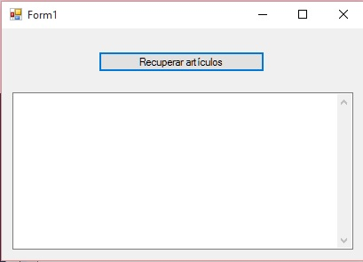
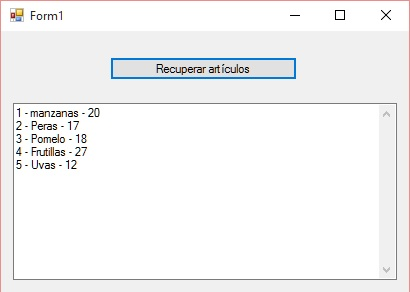

80 - SqlCommand (select): Listar registros |
Vimos el concepto anterior como enviar datos al servidor para que se efectúe un insert en una tabla.
Veremos ahora como recuperar los datos almacenados en una tabla para mostrarlos en pantalla.
Imprimir por pantalla todos los registros contenidos en la tabla articulos.
Para recuperar datos de una tabla tenemos que utilizar el comando SQL select indicando el nombre de la tabla de donde se recuperan los datos y los campos propiamente dichos.
Crear un proyecto llamado: PruebaBaseDatos3 y definir la siguiente interfaz visual:
Un objeto de la clase Button. Un objeto de la clase TextBox (propiedad Multiline: true y ScrollBar: Vertical
En el evento Click del botón procedemos a recuperar los datos de la tabla articulos y los mostramos dentro del TextBox.
using System;
using System.Collections.Generic;
using System.ComponentModel;
using System.Data;
using System.Drawing;
using System.Linq;
using System.Text;
using System.Threading.Tasks;
using System.Windows.Forms;
using System.Data.SqlClient;
namespace PruebaBaseDatos3
{
public partial class Form1 : Form
{
public Form1()
{
InitializeComponent();
}
private void button1_Click(object sender, EventArgs e)
{
SqlConnection conexion = new SqlConnection("server=DIEGO-PC\\SQLEXPRESS ; database=base1 ; integrated security = true");
conexion.Open();
string cadena = "select codigo, descripcion, precio from articulos";
SqlCommand comando = new SqlCommand(cadena, conexion);
SqlDataReader registros = comando.ExecuteReader();
while (registros.Read())
{
textBox1.AppendText(registros["codigo"].ToString());
textBox1.AppendText(" - ");
textBox1.AppendText(registros["descripcion"].ToString());
textBox1.AppendText(" - ");
textBox1.AppendText(registros["precio"].ToString());
textBox1.AppendText("\n");
}
conexion.Close();
}
}
}
Recordar que siempre debemos importar es espacio de nombres:
using System.Data.SqlClient;
Donde se declaran las clases SqlConnection, SqlCommand etc.
Lo primero que hacemos es configurar la cadena de conexión y abrirla:
SqlConnection conexion = new SqlConnection("server=DIEGO-PC\\SQLEXPRESS ; database=base1 ; integrated security = true");
conexion.Open();
El comando SQL para recuperar todas la filas de la tabla articulos es:
string cadena = "select codigo, descripcion, precio from articulos";
Seguidamente seguimos con la creación del objeto de la clase SqlCommand pasando el string con el comando SQL y la referencia a la conexión:
SqlCommand comando = new SqlCommand(cadena, conexion);
Lo nuevo aparece cuando queremos recuperar los datos que genera el SQL Server. Para esto llamamos al método ExecuteReader del objeto SqlCommand:
SqlDataReader registros = comando.ExecuteReader();
Este método retorna un objeto de la clase SqlDataReader que almacena el resultado del comando SQL select.
Para acceder a cada fila retornada por el comando SQL select debemos disponer una estructura repetitiva while y llamar en cada vuelta del ciclo al método Read:
SqlDataReader registros = comando.ExecuteReader();
while (registros.Read())
{
textBox1.AppendText(registros["codigo"].ToString());
textBox1.AppendText(" - ");
textBox1.AppendText(registros["descripcion"].ToString());
textBox1.AppendText(" - ");
textBox1.AppendText(registros["precio"].ToString());
textBox1.AppendText("\n");
}
Imaginemos que el comando SQL select retorna 5 filas. Cada llamada a Read avanza un puntero al siguiente registro y dentro del while lo recuperamos mediante el objeto registros y mediante un subíndice indicamos el nombre de campo de la tabla a recuperar.
Por ejemplo si la tabla articulos estuviera vacía la primera vez que se ejecuta el while el método Read retorna false.
El resultado de ejecutar este programa con la tabla articulos conteniendo 5 filas:
